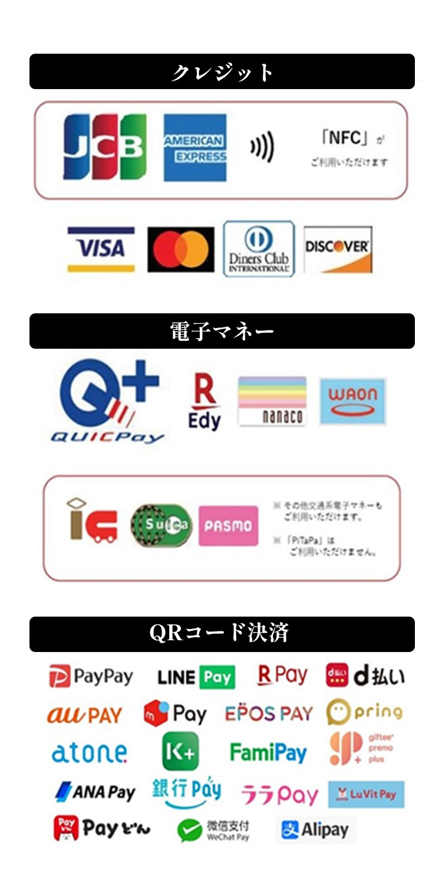

- あたごのまつ 純米吟醸 はるこい
- 萩の鶴 桜ねこ 純米吟醸
- 刈穂 春kawasemi 純米吟醸生おりがらみ
- みむろ杉 華きゅん 純米吟醸 生おりがらみ
- 山本 純米吟醸 うきうき うすにごり生酒
- 甲子 春酒 純米大吟醸 香んばし
- Takachiyo59(極)SEASON2 赤色酵母 ロゼ
- 篠峯 ろくまる 雄町 うすにごり
- 赤武 SAKURA
- 宮寒梅 純米吟醸 SPRINGTIME
- 紀土 純米吟醸 春ノ薫風
- 日高見 助六初桜 特等山田錦 純米大吟醸
- 美禄 特別純米酒 春しぼり 滓がらみ生原酒
- 一ノ蔵 特別純米生酒 うすにごり
- 田林 純米吟醸生原酒 春酒
- あたごのまつ 純米吟醸 はるこい
- 萩の鶴 桜ねこ 純米吟醸
- 刈穂 春kawasemi 純米吟醸生おりがらみ
- みむろ杉 華きゅん 純米吟醸 生おりがらみ
- 山本 純米吟醸 うきうき うすにごり生酒
- 甲子 春酒 純米大吟醸 香んばし
- Takachiyo59(極)SEASON2 赤色酵母 ロゼ
- 篠峯 ろくまる 雄町 うすにごり
- 赤武 SAKURA
- 宮寒梅 純米吟醸 SPRINGTIME
- 紀土 純米吟醸 春ノ薫風
- 日高見 助六初桜 特等山田錦 純米大吟醸
- 美禄 特別純米酒 春しぼり 滓がらみ生原酒
- 一ノ蔵 特別純米生酒 うすにごり
- 田林 純米吟醸生原酒 春酒


SAKEFESとは
日本酒の祭典、SAKE FES SENDAI。
コンセプトは、「日本酒をもっと身近に」。
クラシックで敷居が高い、そんなイメージを持たれがちですが、
実は意外と親しみやすく、思っていたより幅が広く、そして奥が深い。
そんな日本酒の魅力を、沢山の方々に伝えたいという想いで、このイベントは開催されます。
春は出会いの季節。桜と共に、まだ出会ったことのない日本酒に出会ってみませんか。
SAKE FESの5つの楽しみ方
＃飲みやすい日本酒が勢ぞろい
フレッシュな春酒を中心に、アルコール度数の低い日本酒や日本酒カクテルなど、初めての方でも飲みやすいお酒をご用意しました。さらに、桃色のにごり酒など、目でも楽しめるお酒も。(各種￥300～)
DRINK→＃ワイングラスで少量から
日本酒のグラスは全てワイングラス。おちょこと比べて、よりフルーティーな香りを楽しむことができます。また少量ずつのご提供のため、よりさまざまな種類の飲み比べができます。
＃東北各地のグルメが大集合
東北各地の食材を使ったおつまみは、ここでしか味わえないスペシャルメニュー。どれも日本酒によく合うおつまみです。どれを食べるか迷ったら、FOODページのおススメの組み合わせをCHECK！(各種￥200～)
FOOD→＃屋内でも、屋外でも
会場中央には巨大テントを設置し、天候に関わらず楽しめるスペースに。また屋外にもベンチを設置し、ライトアップされた桜を見ながら呑むことができます。お好きなスタイルで日本酒を楽しんでください。
Instagram→＃中央ステージではバンドの生演奏
テント内の中央ステージでは、合計14組のバンドが生演奏を披露！素敵な音楽と共に日本酒を楽しんで頂けます。またバンドだけでなく、ダンスショーやマジックショーなど楽しいステージも盛りだくさん！
STAGE→
開催概要
| 日時 | 2023/04/22(土)～04/28(金) 15:00~21:00(雨天決行) |
|---|---|
| 会場 | 錦町公園 |
| 入場料 | 無料 |
| 飲食代 | ドリンク 各種￥300～ フード 各種￥200～ |
| 支払方法 | 現金のほか、以下のキャッシュレス決済が利用可能です。 |

※ドリンク代、フード代は商品によって異なります。詳しくはメニューページもしくは当日販売ブースにてご確認ください。
※チケットは前売り券もしくは当日会場にてお買い求め頂けます。
※未成年の方は保護者の同伴が必要です。
※スタッフによる年齢確認を行う場合があります。
※チケットは前売り券もしくは当日会場にてお買い求め頂けます。
※未成年の方は保護者の同伴が必要です。
※スタッフによる年齢確認を行う場合があります。
＃ワイングラスはデポジット制です
※グラスを破損・紛失・盗難された場合、その過失の有無に関わらず代金は返却いたしかねます。あらかじめご了承ください。
会場MAP
ACCESS
よくあるご質問
雨天の場合は開催しますか？
開催します。
ただし荒天の場合は中止となる場合がございます。その際は公式TwitterおよびNEWSページにてお知らせいたします。
子どもは入場可能ですか？
可能です。未成年の方の場合は、保護者の同伴が必要となります。
飲食物の持ち込みは可能ですか？
イベント会場内でご購入いただいた飲食物以外の持ち込みはご遠慮いただいております。
NEWS
SDGsへの取り組み
SAKE FES SENDAI 2023で提供する日本酒は、リユースグラスを使った「デポジット方式」での提供を行なっております。プラスチックカップなどの使い捨て容器の使用を最小限に抑え、環境に配慮します。
また、会場内で使用されるカトラリー類は環境に配慮した素材を使用し、脱プラスチックを進めます。
新型コロナウイルス感染症対策
SAKE FES SENDAI 2023ではお客様に安心してお楽しみいただけるよう、以下の取り組みを実施いたします。
お客様へのお願い
● 未成年者の方の飲酒、および飲酒後の運転は、法律で固く禁じられています。
● 会場内販売以外の飲食物の持込みはご遠慮いただいております。
● テント内は禁煙です。指定の喫煙所をご利用ください。
● お手荷物や貴重品などはお客様ご自身で責任を持って管理してください。
● 盗難等について、主催者は一切責任を負えませんので予めご了承ください。
● 新型コロナウィルス感染症対策のため、飲食時以外のマスクの着用、ソーシャルディスタンスの確保にご協力をお願いいたします。
● 飲食スペース以外での飲食、歩きながらの飲食は禁止しております。
● 大声などまわりのお客様にご迷惑となる行為があった場合、ご退場いただくことがあります。